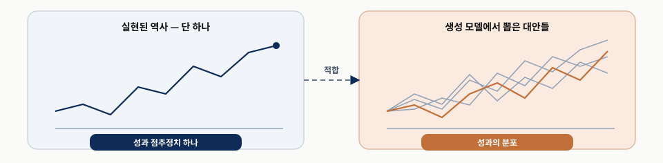
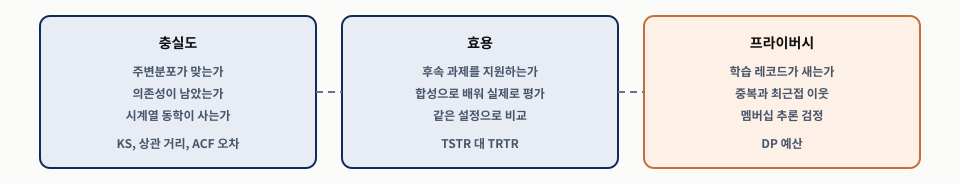

무엇을 보완하는가
한 경로뿐인 역사의 검정력 부족입니다. 목적은 미래 예측이 아니라 강건성 평가입니다.
Machine Learning for Trading 3rd Edition
한 번뿐인 시장 역사를 여러 대안 경로로 넓히고, 그 경로를 충실도·효용·프라이버시로 검증하기
생성 모델로 대안 경로를 만들고, 그 생성기도 따로 검증합니다
한 경로뿐인 역사의 검정력 부족입니다. 목적은 미래 예측이 아니라 강건성 평가입니다.
충실도(실제처럼 만들었나), 효용(업무에 도움이 되나), 프라이버시(원본 정보가 새지 않나)를 따로 묻습니다.
실제 홀드아웃입니다. 생성기는 대체로 학습 분포 안을 보간하므로 학습 국면 밖 사건의 증거가 되지 못합니다.
합성 데이터는 역사적 증거의 대체물이 아니라 의사결정 지원 도구입니다.
| 절 | 답하는 질문 | 남는 판단 |
|---|---|---|
| 5.1 | 한 경로로 검증하면 무엇이 문제인가 | 통계적 보정은 새 시장 이력을 만들지 못한다 |
| 5.2 | 합성 데이터를 무엇으로 평가하는가 | 검증 프로토콜이 아키텍처보다 중요할 때가 많다 |
| 5.3 | 복잡한 생성기를 무엇과 비교하는가 | 한계가 눈에 보이는 기준선이 비교 기준이 된다 |
| 5.4 | 학습된 생성기는 무엇이 다른가 | 유연한 만큼 조용히 실패할 수 있다 |
| 5.5 | GAN을 금융 시계열에 어떻게 맞추는가 | 변형마다 겨냥한 결함과 평가 대상이 다르다 |
| 5.6 | 확산 모델은 무엇을 더하는가 | 학습 안정성·조건부 생성을 생성 속도와 맞바꾼다 |
| 5.7 | 표 형식 금융 데이터는 어떻게 만드는가 | 문장으로 그럴듯한 행이 유효한 레코드는 아니다 |
| 5.8 | 결과를 어떻게 읽는가 | 충실도와 효용은 프라이버시를 증명하지 않는다 |
| 5.9 | 무엇을 남기는가 | 결론은 보류한 실제 데이터에서 확인한다 |
평가 틀(5.2) → 기준선(5.3) → 학습 생성기(5.4–5.7) → 적용(5.8) 순서입니다.
INTRODUCTION · 장 도입
관측한 역사는 가능한 시장 결과 가운데 단 하나의 경로입니다.

| 이름 | 만드는 방식 | 투자 현장의 예 |
|---|---|---|
| 합성 데이터 | 관측 데이터의 결합분포를 학습한 모델에서 뽑되 시간·자산·국면의 의존 구조를 보존 | 실제 주가의 특징을 배운 모델로 새 기록을 만든다 |
| 시뮬레이션 데이터 | 가정한 확률 과정에 따른 모수적 몬테카를로 결과 | 정해 놓은 가격 변화 공식을 반복 계산한다 |
| 생성 시나리오 | 특정 국면이나 상태를 조건으로 뽑은 표본 | ‘등락이 큰 장세’ 조건을 붙여 만든다 |
세 종류 모두 한 번만 실현된 역사를 추가 표본으로 보강해 전략을 여러 상황에서 시험하는 재료입니다.
기록의 진행 순서가 달라져도 전략이 크게 무너지지 않는지를 봅니다
ROBUSTNESS
DECISION SUPPORT
투자 예시 — ETF를 사서 보유하는 전략이 지난 급락을 잘 넘겼어도, 급락이 매수 직후에 왔다면 결과가 달랐을 수 있습니다. 실제로는 두 ETF가 급락일에 같이 떨어졌는데 만든 기록에서는 늘 하나가 오른다면, 나눠 사는 효과가 실제보다 좋아 보입니다.
같이 움직이는 관계(자산 간 의존성)를 놓친 데이터로 비중을 정하면 위험을 작게 봅니다.
투자 예시 — 하루 단위 ETF 기록을 만들 모델을 고르고(생성 아키텍처), 만든 기록의 큰 손실과 연속 급락을 확인한 뒤(정형화된 사실), 그 자료로 학습한 예측 모델을 실제 기록에서 시험합니다(TSTR).
전개 순서: 필요성과 재현 대상 → 평가 틀 → 고전적 기준선 → GAN·확산 모델·LLM → 같은 틀로 비교.
SECTION 01 · 교재 §5.1
선택 인플레이션과 합성 데이터의 세 역할
교재 §5.1
CONSTRAINT
RISK
투자 예시 — 한 전략이 급락 직전에 우연히 주식을 팔았습니다. 매도 신호가 며칠만 늦었어도 손실이 컸을 수 있습니다.
위기 한 번을 피한 실적만으로 전략의 실력을 확신하기는 어렵습니다.
다중 검정의 과제 — 교재 §5.1
CHOICES
CONSEQUENCE
투자 예시 — 매수 기준을 바꾸고, 보유일을 바꾸고, 거래 종목을 바꾸며 같은 과거 기록을 계속 시험한 뒤 가장 잘된 조합만 남깁니다.
규칙을 많이 바꿔 볼수록 그 과거 기록에서만 유난히 좋은 조합을 찾기 쉽습니다.

참고 · 공식 Primer
BAYES
LIMIT
참고 · 공식 Primer “Bayes' theorem and posterior distributions”
승률의 불확실성을 계산해도 ‘여러 전략 중 최고만 골랐다’는 문제는 별도로 다뤄야 합니다.
교재 §5.1
PROCESS
CORRECTION
투자 예시 — 보고서에 샤프 비율 하나를 적기 전에 매수 규칙과 종목을 몇 번 바꿨는지 함께 적습니다.
보정은 선택 효과를 추론에 반영할 뿐이므로, 새 경로가 필요한 자리가 합성 데이터의 몫입니다.
한 경로를 경로 분포로 넓히는 시뮬레이션 인프라 — Cetingoz and Lehalle (2025)
| 정형화된 사실 | 관찰되는 현상 | 투자 현장에서 보이는 모습 |
|---|---|---|
| 두꺼운 꼬리 | 극단 수익률이 가우시안 예측보다 자주 나타난다 | 드문 큰 상승·하락이 자주 온다 |
| 변동성 군집 | 큰 절대수익률이 몰리고 제곱·절대수익률 자기상관이 천천히 감소한다 | 오늘 크게 흔들렸다면 내일도 크게 흔들릴 수 있다 |
| 레버리지 효과 | 특히 주식에서 음의 수익률 뒤 변동성이 높아진다 | 하락한 뒤 등락 폭이 커진다 |
| 약한 수익률 자기상관 | 일별 수익률의 선형 자기상관은 대체로 작다 | 오늘 올랐다고 내일도 오른다고 말하기 어렵다 |
수익률의 방향은 다음 날과 거의 이어지지 않지만, 크기는 이어집니다. 둘을 따로 검사합니다.
교재 §5.1
각 ETF의 분포, 날짜 사이의 연결, 같은 날 여러 ETF의 연결을 함께 포착해야 합니다. 상승일·하락일 수가 같아도 급락 날짜가 바뀌면 함께 보유한 결과가 달라집니다.
리스크 관리·레버리지·포트폴리오 구성은 꼬리 결과·상관관계 붕괴·국면 전환에 좌우됩니다(Takahashi and Mizuno, 2024).
눈으로 비슷한지가 아니라 표본이 실제 후속 의사결정을 지지하는지가 중심 기준입니다.
투자 예시 — 만든 기록에 잔잔한 등락만 있고 며칠 연속 급락이 없는데, 이를 보고 빌린 돈까지 투자해도 괜찮다고 판단하면 위험합니다. 연속된 큰 움직임과 꼬리를 놓치면 낙폭이 실제보다 작아 보입니다.
비슷한 차트를 만드는 것과 투자 판단에 도움을 주는 것은 다릅니다.
신중하게 운영한다는 전제 — 교재 §5.1
후보 파라미터를 한 이력이 아니라 여러 표본 궤적에 걸쳐 평가합니다. 매주와 매달 리밸런싱을 여러 모의 기록에서 비교합니다.
관측된 변동성과 의존성에 맞는 스트레스 유사 경로로 낙폭, 상관관계 붕괴, 위험 통제의 안정성을 살핍니다.
거래 수준 자료를 공유할 수 없을 때 5.8절의 명시적 프라이버시 평가를 통과한 합성 데이터로 개발·협업합니다.
고객 거래를 그대로 공개하지 않는 개발용 자료라도 실제 누출 검사를 통과해야 합니다.
교재 §5.1
RISK
DEFENSE
투자 예시 — 만든 주가 기록을 보며 손절 기준을 계속 바꾸다 보면, 그 모델이 자주 만드는 패턴에만 유리한 규칙이 남습니다. 합성 거래 표를 동료에게 넘길 때는 분석에 필요한 관계는 남기되 특정 고객의 거래는 드러나지 않아야 합니다.
핵심 질문: 프라이버시와 누출 위험을 통제하면서 목적에 필요한 구조를 보존하는가.
SECTION 02 · 교재 §5.2
세 축, TSTR 대 TRTR, 고유 실패, 최소 보고 항목

교재 §5.2
PROBLEM
CONFLICT
투자 예시 — 실제로는 두 ETF가 같은 날 떨어지는데 합성 자료에서는 번갈아 떨어져, 반씩 투자하면 손실이 거의 없는 것처럼 보입니다.
따로 본 등락(주변 수익률)이 맞아도 함께 급락하는 관계가 틀리면 분산투자 효과가 과장됩니다.
관련 데이터 구조를 보존하는가? — 교재 §5.2
KS 통계량, Wasserstein 거리와 함께 히스토그램·경험적 CDF·QQ 플롯을 봅니다. 요약 통계만 쓰면 꼬리의 인공물이 가려집니다.
상관·공분산행렬, 순위상관, 섹터·국면 수준 관계를 따로 검정합니다. 주변분포를 맞춰도 관계는 잃을 수 있습니다.
원수익률 ACF로 방향 예측력을, 제곱·절대수익률 ACF로 변동성 지속성을 보고 꼬리·의존성 점검을 더합니다.
투자 예시 — 하루 종가를 잘 만드는 모델도 분 단위 주문 시험에는 분 단위 움직임을 따로 확인해야 합니다. 두 자료의 평균 수익률이 같아도 실제에는 큰 하락일이 있고 합성에는 작은 등락만 있을 수 있습니다.
ACF는 며칠 떨어진 두 값이 얼마나 연결되는지 보여 주는 도구입니다.
참고 · 공식 Primer
DIAGNOSTICS
JOINT
투자 예시 — 합성 자료에서는 상승 다음 날 늘 상승하는데 실제에는 그런 규칙이 없다면, 그 자료로 학습한 모델은 실제 매매에서 통하지 않는 신호를 배웁니다.
참고 · 공식 Primer “Stylized facts of financial time series for simulation and validation”
두 ETF를 각각 GARCH로 만들었다면, 같은 날 크게 떨어지는지는 아직 맞췄다고 할 수 없습니다.
의도한 사용 사례를 지원합니까? — 교재 §5.2
PROCEDURE
ERROR RATIO
$$\mathrm{TSTR\text{-}error\text{-}ratio} = \frac{Error_{TSTR}}{Error_{TRTR}}$$
실제 학습 오차 10, 합성 학습 오차 12라면 $12\div10=1.2$ — 오차가 20% 더 크다는 뜻이며 수익률이 아닙니다.
투자 예시 — 합성 자료로 급락 경보 모델을 학습했다면, 효용은 실제 시장의 급락을 잘 찾아내는지로 판정합니다. 모양이 실제와 비슷해도 경보에 필요한 정보를 잃으면 효용은 낮습니다.
충실도는 대개 필요조건이지만 충분조건은 아닙니다.
교재 §5.2
1에 가까우면 과제 관련 정보를 보존했고, 1보다 크면 효용 손실입니다.
잡음 억제일 수도 있지만 정보 누출·목표값 단순화·지나치게 좁은 평가 설계일 수 있습니다. 시험 기간이 생성기 학습에 섞였는지 봅니다.
AUC·정확도처럼 높을수록 좋은 점수는 TSTR·TRTR을 직접 적거나 방향을 밝힌 비율을 씁니다. 오차 비율과 섞으면 같은 숫자가 반대 의미가 됩니다.
Tail-GAN은 VaR·ES, Sig-CWGAN은 경로 단위, 확산 모델은 시간·의존성 진단, 표 LLM은 스키마 유효성·분포·후속 예측으로 봅니다.
큰 손실을 평가할 자료라면 큰 손실을, 고객 표라면 빠진 칸과 말이 안 되는 값을 검사합니다.
학습 정보가 누출되는가? — 교재 §5.2
LEAK TESTS
DP-SGD
투자 예시 — 실제 고객의 드문 거래가 합성 표에 거의 그대로 나오면 이름을 지웠어도 그 고객을 알아볼 수 있습니다. 만든 주문들이 학습한 주문과 유독 닮았다면 원본 암기를 의심합니다.
프라이버시는 완성된 데이터에 나중에 붙이는 레이블이 아니라 처음부터 반영할 설계 제약입니다.
합성 데이터 특유의 실패 양상 — 교재 §5.2
| 실패 | 어떻게 나타나는가 | 투자 현장의 예 |
|---|---|---|
| 학습 데이터 편향 증폭 | 과대표현된 국면·섹터·상태를 생성기가 더 강하게 되풀이한다 | 상승장만 배운 모델이 상승장 기록을 반복한다 |
| 생성기에 대한 전략 과적합 | 많은 합성 경로에서 좋은 전략이 생성기 가정에 맞춰진다. 최종 후보는 실제 홀드아웃에서 평가 | 그 자료에서 최고인 전략이 급락도 버틴다고 주장한다 |
| 제한된 참신성 | 학습 분포의 지지집합 안을 보간할 뿐 전례 없는 시나리오에는 약하다 | 배우지 않은 위기를 놓친다 |
위기 없는 5년을 학습한 모델로 기록을 아주 많이 만들어도 실제 위기를 학습한 것은 아닙니다.
실무적 검증 체크리스트 — 교재 §5.2
| 항목 | 보고할 내용 | 답하는 질문 |
|---|---|---|
| 충실도 진단 | 주변분포 오차, 상관행렬 거리, 꼬리 통계량, 변동성 지속성 오차 | 얼마나 실제 같은가 |
| 효용 벤치마크 | TSTR 대 TRTR 또는 과제별 위험 지표 | 급락 예측 같은 업무가 잘되는가 |
| 프라이버시 점검 | 중복 탐지, 최근접 이웃, 구성원 추론, 공식 DP 예산 | 고객 거래가 새는가 |
| 실제 데이터 홀드아웃 결과 | 합성 데이터가 모델·전략 선택에 관여했다면 필수 | 새 실제 기간에서도 버티는가 |
임계값은 빈도·표본 크기·자산군·후속 목표에 맞게 보정합니다. 초 단위 주문 시험과 월별 비중 조정의 기준은 다릅니다.
SECTION 03 · 교재 §5.3
부트스트랩 세 기법과 모수적 모델 다섯
교재 §5.3
BOOTSTRAP
PARAMETRIC
투자 예시 — 어려운 생성 모델을 도입하기 전에 과거 수익률 구간을 다시 뽑는 방법으로 같은 위험 시험을 먼저 해 봅니다.
보정·진단·거버넌스가 쉽고 한계가 눈에 보인다는 점이 학습 생성기를 평가할 때 유용합니다.
부트스트랩 방법 — 관측 수익률을 다시 조립하기
STRENGTH
LIMIT
투자 예시 — 원래 기록의 가장 큰 하락보다 더 큰 단일 하락을 시험하려 해도 기존 수익률을 다시 뽑는 것만으로는 그 값이 생기지 않습니다.
이 공통 한계 안에서 세 기법의 차이는 시간 의존성을 어떻게 다루는가에 있습니다.
교재 §5.3
개별 수익률을 복원추출합니다. 주변분포는 보존하지만 변동성 군집 같은 시간 의존성을 파괴해 위험 분석·포지션 규모 결정에는 보통 맞지 않습니다.
고정 길이 연속 구간을 뽑습니다. 경계 단절이 생기고, 긴 블록은 의존성을 지키는 대신 다양성을 낮춥니다. 흔한 출발점은 1개월, 약 22거래일입니다.
기하분포 무작위 블록 길이를 씁니다(Politis and Romano, 1994). 고정 경계 인공물을 줄여, 모수적 변동성 모델 없이 군집을 살릴 때 좋은 기본값입니다.
투자 예시 — 하루씩 뽑으면 급락 다음 날이 잔잔한 날로 바뀔 수 있습니다. 급락이 이어진 며칠을 통째로 뽑으면 그 연속성이 남습니다.
세 방법을 가르는 값비싼 정보는 제곱·절대수익률 ACF입니다. IID에서는 0 근처로 무너집니다.
참고 · 공식 Primer
JOINT RESAMPLING
ACF / PACF
투자 예시 — 월요일의 주식 ETF 수익률을 뽑았다면 채권 ETF도 그 월요일 값으로 가져옵니다. 오늘 많이 떨어졌다면 내일 방향은 몰라도 내일도 크게 움직일 가능성은 있습니다.
참고 · 공식 Primer “Bootstrap methods for dependent financial time series”, “ACF and PACF interpretation”
한 시차만 유난히 튀었다면 우연인지 다른 시차에서도 반복되는지 확인합니다.
모수적 가격 및 변동성 모델 — 가정을 세우고 역사 밖 경로 만들기
SDE
MISSPECIFICATION
투자 예시 — 하루를 한 번에 계산하는 대신 더 작은 간격으로 여러 번 계산하면, 한 번의 무작위 움직임 크기도 간격의 제곱근에 맞춰 줄입니다. 일정한 위험만 가정한 공식은 위기 때 위험이 갑자기 커지는 모습을 빠뜨립니다.
공식으로 새 상황을 만들 수 있지만 그 공식의 가정을 벗어나지는 못합니다.

교재 §5.3
GBM
$$dS = \mu S\,dt + \sigma S\,dW$$
MERTON
$$dS = \mu S\,dt + \sigma S\,dW + S(e^{Y}-1)\,dN$$
투자 예시 — GBM은 장세가 바뀌어도 같은 변동성을 계속 적용합니다. 점프-확산은 평소 작은 등락을 이어 가다 특정 사건 때 한 번에 크게 떨어지는 기록을 만듭니다.
큰 하락 점프를 넣으면 평균 수익률도 의도대로 유지되는지 확인합니다.
교재 §5.3
ORNSTEIN-UHLENBECK
$$d(\log S) = \kappa(\theta - \log S)\,dt + \sigma\,dW$$
STOCHASTIC VOLATILITY
$$dv = \kappa(\theta - v)\,dt + \xi\sqrt{v}\,dW_{v},\;\; \mathrm{Corr}(dW_S, dW_v)=\rho$$
투자 예시 — 두 자산의 가격 차이가 벌어졌다가 좁혀지는 기록은 평균회귀로, 가격이 떨어지는 날 위험 크기가 커지는 기록은 Heston으로 만듭니다.
가격 차이를 다루는 규칙을 계속 상승하는 주식에 그대로 적용하면 성장을 잘못 표현합니다.
교재 §5.3
MODEL
$$r_t=\mu+\sigma_t\varepsilon_t,\quad \sigma_t^2=\omega+\alpha(r_{t-1}-\mu)^2+\beta\sigma_{t-1}^2$$
USE
투자 예시 — 급락 직후 위험이 크게 오르는 정도가 $\alpha$, 그 높아진 위험이 다음 날부터 얼마나 천천히 줄어드는지가 $\beta$입니다. ETF 실제 수익률로 설정값을 추정한 뒤 만든 기록의 큰 등락이 얼마나 이어지는지 봅니다.
충격 때문에 뛰는 위험과 오래 남는 위험을 구분해 읽습니다.
교재 §5.3
| 모델 | 표현하는 것 | 놓치거나 주의할 것 |
|---|---|---|
| GBM | 드리프트와 일정한 변동성, 해석적 편의 | 변동성 군집, 초과첨도(얇은 꼬리) |
| 점프-확산 | 두꺼운 꼬리, 폭락 유사 움직임 | 드리프트 보정, 점프 도착과 변동성 상태가 독립 |
| 평균회귀 (OU) | 스프레드·일부 금리·원자재의 장기 균형 회귀 | 추세가 형성되는 일반 자산 수익률 |
| Heston | 두꺼운 꼬리, 변동성 군집, 음의 ρ로 레버리지 효과 | 분산이 음수가 되지 않는 이산화 선택 |
| GARCH(1,1) | 이산시간 변동성 군집, 최대우도 보정 | 정상성 조건 α+β<1, 단변량이면 위기 동조화는 따로 |
모델을 고르기 전에 시험하려는 위험이 어느 행의 ‘놓치는 것’에 들어 있지 않은지 봅니다.
한계와 이러한 기준선을 사용하는 방법 — 교재 §5.3
TRADE-OFF
USE
00_classical_simulation.py가 보정 진단과 함께 이 절의 모든 방법을 구현합니다투자 예시 — 새 모델이 단순 모델보다 위험 시험에서 낫지 않다면, 팀은 작동 이유를 설명하기 쉬운 단순 모델을 유지합니다.
부트스트랩에는 관측하지 않은 값이, 공식에는 작성자가 넣지 않은 특징이 없습니다.
SECTION 04 · 교재 §5.4
GAN·VAE·확산 모델·LLM의 학습 목적과 실패 방식
학습된 생성기는 결합분포를 학습 목표로 근사합니다 — 교재 §5.4
DISCRIMINATIVE
GENERATIVE
투자 예시 — 여러 ETF의 같은 날짜 수익률을 함께 보여 주고 비슷한 새 날짜 기록을 만들게 합니다. 값만 비슷하고 날짜 순서나 큰 손실이 빠지면 필요한 구조를 다 배운 것이 아닙니다.
복잡한 의존 구조를 모수식 하나로 쓰기 어려울 때 유연성이 매력이지만, 그 대가가 조용한 실패입니다.

교재 §5.4
재구성 + 잠재 분포 가정. 학습이 안정적이고 혼합형 데이터의 강한 기준선이지만 희귀 범주·꼬리를 과소표현할 수 있습니다.
생성기와 판별기의 경쟁. 복잡한 의존성과 선명한 표본, 대신 학습이 불안정합니다(5.5절).
잡음을 반복해 제거하는 절차를 학습. 안정적이고 조건부 생성을 지원하지만 표본추출이 느립니다(5.6절).
레코드를 텍스트로 직렬화해 자기회귀 생성. 혼합형 데이터에 유용하지만 스키마 검증·프라이버시 점검이 필요합니다(5.7절).
투자 예시 — 날짜별 수익률을 만드는 일에는 시간·꼬리·경로 충실도가, 고객 나이·계좌 유형·거래액을 한 행으로 만드는 일에는 필드 정합성과 정보 노출 검사가 중요합니다.
GAN은 보통 한 번에, 확산 모델은 반복해서, LLM은 다음 텍스트 조각을 이어 만듭니다.
교재 §5.4
ALIGN
QUESTIONS
투자 예시 — 위험팀은 급락 손실을 잘 만드는 모델을, 고객 자료팀은 잘못된 행과 정보 노출이 적은 모델을 찾습니다.
큰 손실을 시험하려면 그 손실을 잘 만들도록 학습시키고 결과도 큰 손실 기준으로 봅니다.
SECTION 05 · 교재 §5.5
TimeGAN · Tail-GAN · Sig-CWGAN · GT-GAN
교재 §5.5
ROLES
TRAINING
투자 예시 — 한 모델이 가상 ETF 수익률을 만들고, 다른 모델이 실제와 가상을 섞어 놓고 어느 쪽인지 맞힙니다. 판별기가 가짜의 약점을 찾으면 다음에는 생성기가 그 약점을 줄입니다.
둘이 동시에 같은 일을 하는 것이 아니라 각자의 업데이트 순서를 반복합니다.

적대적 루프는 유지하고 겨냥하는 결함을 바꿉니다 — 교재 §5.5
시간 순서 — 임베딩 공간에서 다음 잠재 상태를 예측합니다.
드문 큰 손실 — VaR·ES 같은 꼬리위험 측도를 직접 맞춥니다.
경로의 움직임 순서 — 판별기 대신 경로 시그니처를 비교합니다.
불규칙한 관측 시간 — 연속시간 동학을 신경 ODE로 다룹니다.
시간 순서가 중요한지, 큰 손실이 중요한지, 거래 간격이 중요한지에 따라 변형을 고릅니다.
순차 데이터에 TimeGAN 사용하기 — 교재 §5.5
ARCHITECTURE
TRAINING
투자 예시 — 하루하루의 ETF 정보를 작은 숫자 묶음으로 압축하고, 오늘 묶음으로 내일 묶음을 예측하는 연습을 시킵니다(Yoon, Jarrett, and van der Schaar, 2019).
기본 표현과 시간 순서를 먼저 익힌 뒤 생성과 판별까지 함께 학습합니다.
교재 §5.5
DATA
01_timegan.py
투자 예시 — 실제 학습 오차를 100으로 놓으면 합성 학습 오차가 176입니다. 수익률이 76% 늘었다는 말이 아닙니다.
AUC 0.87은 판별 성능이지 생성기 품질 87점이 아닙니다.

교재 §5.5
UTILITY
FIDELITY
투자 예시 — 만든 주가로 학습한 모델이 어느 정도 예측해도, 자산들이 함께 움직이는 모습은 실제보다 약할 수 있습니다.
1.76과 1.00은 해당 실험의 비교이며 다른 자료에서도 같은 순위라는 뜻은 아닙니다.
위험 제약 생성을 위한 Tail-GAN 사용 — 교재 §5.5
LOSS
$$L_{tail} = \lambda_{1} \big| VaR_{\alpha}^{real} - VaR_{\alpha}^{synth} \big| + \lambda_{2} \big| ES_{\alpha}^{real} - ES_{\alpha}^{synth} \big|$$
투자 예시 — 평범한 거래일을 잘 만들어도 극단 손실일을 못 만들면 위험 한도 계산에는 부족합니다. 두 ETF가 따로는 안전해 보여도 같은 날 떨어지면 합산 손실이 큽니다.
후속 과제가 위험 측정일 때 적합하며, 대가로 분포 중심의 적합도가 낮아질 수 있습니다.
Tail-GAN을 사용할 때 — 교재 §5.5
02_tailgan_tail_risk.py
LIMITS
투자 예시 — 큰 손실이 며칠 연속된 기록과 흩어진 기록은 VaR·ES가 같아도 손절 규칙에서 다르게 작동합니다.
성능은 꼬리 확률 α, 학습에 쓴 벤치마크 포트폴리오, 데이터의 국면 구성에 의존합니다.
참고 · 공식 Primer
FEW POINTS
REPORTING
투자 예시 — 가장 나쁜 2–3일이 바뀌면 위험 추정도 크게 달라집니다. 급락이 며칠 이어질 수 있다면 하루 손실만 확대해 보유기간 위험을 계산하는 방식이 충분한지 봅니다.
참고 · 공식 Primer “Tail risk estimation under finite samples”
Tail-GAN의 꼬리 일치는 학습 표본과 생성 모형에 조건부인 결과입니다.
시간적 충실도를 위한 경로 시그니처에 Sig-CWGAN 사용하기
SIGNATURE
LEVEL-k TERM
$$S(X)^{i_1,\dots,i_k}=\int_{0<t_1<\dots<t_k<T} dX_{t_1}^{i_1}\cdots dX_{t_k}^{i_k}$$
$i_1,\dots,i_k$는 적분할 좌표(자산), $t_1<t_2$는 앞 사건이 먼저라는 뜻입니다.
투자 예시 — 한 기록은 급락 후 회복, 다른 기록은 상승 후 하락했다면 끝 수익이 같아도 중간 손실이 다릅니다. 같은 하락이 몇 분 만에 일어난 경우와 하루에 걸친 경우는 주문 대응이 다릅니다.
주식 ETF가 먼저 오르고 채권 ETF가 뒤따른 기록은 반대 순서 기록과 다른 시그니처를 갖습니다.
교재 §5.5
OBJECTIVE
SCALING
투자 예시 — ETF 두 개로 시험하던 설정을 50개 자산으로 늘리려면 메모리와 계산 시간부터 확인합니다. 소수 ETF의 급락 후 회복 순서가 중요한 분석이라면 경로 요약을 검토합니다.
얕게 절단하면 고차 정보를 버리고, 깊게 하면 계산비용과 추정 난도가 빠르게 늘어납니다.

불규칙 시계열에 GT-GAN 사용하기 — 교재 §5.5
NEURAL ODE
$$\frac{dx}{dt} = f_{\theta}(x,t)$$
WHEN
투자 예시 — 가격이 같은 폭으로 움직였어도 한 번은 몇 초, 다른 한 번은 몇 분 걸렸다면 판별기에 둘의 시간도 알려 줘야 합니다. 매일 있던 기록에서 몇 날을 지운 것은 거래가 몰리거나 뜸해서 생긴 틱 간격과 다릅니다.
실제 시간 정보가 필요할 때만 복잡한 시간 모델을 검토합니다.
교재 §5.5
04_gtgan_irregular.py
COMPLEXITY
투자 예시 — 거래가 없어서 기록이 뜸한 것은 실제 이벤트 시간의 정보일 수 있지만, 데이터 피드가 늦어서 뜸한 것은 수집 과정의 문제입니다.
왜 시간 간격이 불규칙한지를 먼저 구분합니다.
GAN 학습의 과제 — 교재 §5.5
일부 국면만 포괄해 위험상 중요한 희귀 상태를 덜 만듭니다.
최적화가 진동·발산합니다. 스펙트럼 정규화, WGAN-GP, TimeGAN의 단계적 학습이 안정화 기법입니다.
학습률·아키텍처·정규화 가중치를 데이터셋마다 다시 조정합니다.
정답 레이블이 없으므로 보류 분포 검정, TSTR, 시간·횡단면 의존성 진단을 결합합니다.
투자 예시 — 매번 잔잔한 장세만 나오거나 실행할 때마다 결과가 크게 달라진다면, 학습 손실이 낮아도 점검합니다.
Kwon and Lee (2024): GAN은 주변분포는 근사해도 세밀한 시간 구조·다변량 의존성에 자주 어려움을 겪습니다.
교재 §5.5
| 변형 | 겨냥한 결함 | 핵심 장치 | 보고된 값 |
|---|---|---|---|
| TimeGAN | 시간 의존성 | 임베딩 + 감독 네트워크 | 판별 정확도 68%, AUC 0.87, TSTR 1.76 |
| Tail-GAN | 꼬리 사건의 과소 가중 | VaR·ES 차이 벌점 | VaR 오차 13%, ES 오차 11% |
| Sig-CWGAN | 경로별 유사성 | 시그니처 커널 MMD | TSTR 0.954, 제곱 ACF 0.49→0.05 |
| GT-GAN | 불규칙 관측 시간 | 신경 ODE | 재구성 MSE 0.026, 평활도 비율 0.02 |
투자 예시 — 각 ETF의 등락 폭은 잘 맞는데 모든 ETF가 언제나 같은 방향으로만 움직인다면, 다변량 의존성이 저차원 구조로 붕괴한 경우입니다.
시간 동학과 횡단면 관계를 주변분포와 따로 검증합니다. 다음 절은 확산 모델입니다.
SECTION 06 · 교재 §5.6
DDPM · 조건부 생성 · Diffusion-TS

다른 실험에서 잘됐다는 경험적 성능이 내 업무의 검증을 대신하지는 않습니다 — 교재 §5.6
TRAIN
SAMPLE
투자 예시 — 실제 수익률에 크고 작은 무작위 값을 더하고 모델에게 그 값을 맞히게 합니다. 매일 밤 많은 모의 기록이 필요하다면 품질과 함께 아침까지 생성이 끝나는지도 봅니다.
ETF 자료 후보에 확산 모델을 추가했다면 기존 모델과 같은 실제 시험 기간에서 비교합니다.
잡음 제거 확산 프레임워크 — 교재 §5.6
FORWARD
$$q(x_t\mid x_{t-1}) = N\big(x_t;\sqrt{\alpha_t}\,x_{t-1},(1-\alpha_t)I\big)$$
REVERSE
$$p_\theta(x_{t-1}\mid x_t) = N\big(x_{t-1};\mu_\theta(x_t,t),\Sigma_\theta(x_t,t)\big)$$
투자 예시 — 처음에는 조금 흐트러뜨리고 뒤로 갈수록 원래 수익률을 알아보기 어렵게 만듭니다. 생성할 때는 한 단계 덜 흐트러진 상태가 어디쯤인지 계산하는 작은 수정을 이어 갑니다.
이미 아는 실제 기록을 복사하는 절차가 아니라 배운 복원 규칙으로 새 표본을 만듭니다.
확산 모델이 금융 수익률에 적합한 이유 — 교재 §5.6
DDPM
WHY FINANCE
투자 예시 — 학습 담당자는 수익률에 어떤 무작위 값을 더했는지 알고 있으므로 모델의 예상과 정답을 비교해 고칩니다. 큰 하락이 나타났다고 끝내지 말고 그 뒤 며칠의 흔들림도 봅니다.
학습 안정성과 생성 속도는 별개입니다. 운영 시간도 성능 비교의 일부입니다.
국면 스트레스 테스트를 위한 조건부 생성 — 교재 §5.6
GUIDANCE
WORKFLOW
투자 예시 — 과거 기록에 저변동성·고변동성 표시를 붙여 고변동성 쪽으로 생성을 조정합니다. 고변동성을 강하게 요구했더니 모든 기록이 거의 같은 급락을 보인다면 유도 강도가 다양성을 줄인 것입니다.
목표 장세에 맞는 정도와 서로 다른 기록을 만드는 다양성 사이의 균형을 조정합니다.

교재 §5.6
LABEL ERROR
CAUSALITY
투자 예시 — 평범한 기간을 위기로 표시해 학습했다면 ‘위기’ 요청 기록도 실제 위기와 다릅니다. 상장폐지 종목을 빼고 학습하면 만든 기록도 사라진 종목의 손실을 놓칩니다.
참고 · 공식 Primer “Causality, confounding, and why good signals can be misleading”
조건부 합성 경로는 가정한 관측 구조의 시나리오이지 인과적 스트레스 효과의 증명이 아닙니다.
해석 가능한 분해를 적용한 Diffusion-TS — 교재 §5.6
DECOMPOSITION
$$\hat{x}_0 = trend + season$$
FOURIER LOSS
투자 예시 — 실제 기록은 며칠 간격으로 출렁이는데 만든 기록은 하루마다 출렁이면 평균이 같아도 움직임이 다릅니다. 느린 움직임은 맞는데 짧고 큰 급락이 사라졌다면 어느 성분이 지나치게 매끈해졌는지 찾습니다.
이름이 추세·계절성이어도 경제 원인을 밝혔다는 뜻이 아니라 출력 모양을 제한하는 설계입니다.
교재 §5.6
CHALLENGES
05_diffusion_ts.py
투자 예시 — 만든 기록이 너무 잔잔하지 않은지, 제시간에 만들어지는지, 실제 급락 분류에 도움이 되는지를 각각 확인합니다.
실행 성공뿐 아니라 분해·푸리에 손실·국면 조건 각 단계가 목표 특징을 만들었는지 봅니다.
GAN과 확산 모델 중 선택하기 — 교재 §5.6
GAN은 한 번의 순전파, 확산 모델은 반복 잡음 제거입니다. DDIM으로 50–100단계까지 줄일 수 있습니다.
Tail-GAN은 위험 측도, Sig-CWGAN은 경로 충실도, GT-GAN은 불규칙 타임스탬프에 맞습니다. Diffusion-TS는 조건부 생성을 내장한 범용 대안입니다.
TimeGAN은 유계 데이터, Tail-GAN은 포트폴리오 꼬리, Sig-CWGAN은 저차원, GT-GAN은 자연스러운 불규칙 시간을 필요로 해 과제와 데이터가 다릅니다.
투자 예시 — 많은 모의 기록이 필요한 팀은 GAN과 확산 모델의 총 실행 시간을 측정합니다. 한 모델은 가격 예측, 다른 모델은 큰 손실 계산을 시험했다면 숫자의 크고 작음으로 순위를 매길 수 없습니다.
표 형식 데이터에는 다음 절의 LLM이 또 다른 후보입니다.
SECTION 07 · 교재 §5.7
직렬화 · GReaT · 제약 계층
수치형·범주형·자유 텍스트가 섞인 표의 열 사이 의존성을 학습합니다 — 교재 §5.7
| income | debt_ratio | emp_length | home_status | approved |
|---|---|---|---|---|
| 85000 | 0.32 | 7 | MORTGAGE | 1 |
직렬화 결과 — “income은 85000, debt_ratio는 0.32, emp_length는 7, home_status는 MORTGAGE, approved는 1”
투자 예시 — ETF 행이라면 ‘수익률은 -1%, 거래량 비율은 1.2, 장세는 고변동성’처럼 적습니다. 생성한 문장은 다시 표의 칸으로 읽는 파싱을 거쳐야 하고, 필드가 모두 있고 자료형이 맞아야 유효합니다.
많은 레코드를 학습하면 고용·주거 상태가 주어졌을 때 소득·부채 비율이 승인과 어떻게 연결되는지(조건부 구조)를 배웁니다.
GReaT 프레임워크 — Borisov et al. (2023)
각 행을 열-값 쌍의 텍스트로 바꿉니다. 열 순서 민감도를 줄이려고 순서를 무작위로 섞기도 합니다.
GPT-2 규모 모델을 직렬화 말뭉치에 맞춥니다. 다음 토큰 예측이 필드의 결합분포를 암묵적으로 모델링합니다.
새 텍스트를 뽑아 행으로 파싱합니다. 형식이 깨졌거나 필드가 빠졌거나 범위를 벗어난 출력은 걸러 냅니다.
투자 예시 — ‘고변동성’ ETF 행에서 거래량 비율이 보통 어떤 범위인지를 함께 배우므로, 열마다 따로 값을 뽑는 방식과 다릅니다.
이 단순한 틀은 뒤의 한계와 위험을 관리한다는 조건에서 금융에도 적용할 수 있습니다.
금융 응용 — 교재 §5.7
인구통계·재무 비율·범주형 필드가 섞인 신청 기록. 민감한 고객 데이터 노출을 줄이며 모델 개발을 지원합니다.
거래 집계·계좌 속성·간헐적 텍스트. 직렬화가 이질성을 하나의 생성 인터페이스로 바꿉니다.
재무제표·파생 비율을 산업 코드·회계 플래그와 함께 생성·익명화. 엄격한 시점 기준(point-in-time)과 회계 관행 검사가 전제입니다.
투자 예시 — 어떤 날의 투자 판단을 시험하면서 그날 이후 정정된 실적을 넣으면 결과가 과장됩니다. 합성 기업 자료도 당시 알 수 있던 값만 써야 합니다.
숫자만 따로 만들지 않고 한 행의 조합으로 만들며, 그 조합이 실제로 가능한지도 검사합니다.
한계와 위험 — 교재 §5.7
FAILURES
CONSTRAINT LAYER
home_status = "RENT"이면 mortgage_balance = 0투자 예시 — 나이가 소수로 나왔는지, 임차인인데 주택담보 잔액이 있는지 확인합니다. 생성할 때마다 많은 행이 버려지면 더 뽑기 전에 어떤 열에서 가장 많이 틀리는지 봅니다.
드문 원본 행을 그대로 복사한 누출은 문장 형식 검사로 찾을 수 없습니다.
교재 §5.7
| 축 | 측정 | 보고된 결과 |
|---|---|---|
| 효용 | 극단 움직임 분류 AUC-ROC, TSTR 대 TRTR | 0.70 대 0.74, 원문 보고 TSTR 비율 92% |
| 충실도 (수치형) | 열별 KS 통계량 | volume_ratio만 0.10, 1·5·20일·선행 5일 특성은 0.30–0.59 (p < 0.001) |
| 충실도 (범주형 과잉) | 합성 대 실제 비중 | direction = down 94% 대 45%, momentum = flat 69% 대 36% |
| 충실도 (범주형 과소) | 합성 대 실제 비중 | momentum = strong 10% 대 28%, vol_regime = high 1% 대 7% |
06_1lm_tabular_great.py · distilgpt2, RTX 3090 50에포크 약 13분 · 보류 테스트 600개, 극단 = $|fwd\_ret\_5d|$가 90번째 백분위수 초과 · 두 AUC의 단순 비는 약 0.95로 원문 92%와 다르므로 둘 다 적습니다.
흔한 범주에 몰리는 최빈값 붕괴로 합성 표 대부분이 하락·무추세가 되고 강한 추세·고변동성 행은 드뭅니다.
교재 §5.7
WHY
LESSON
투자 예시 — 큰 움직임 구별에는 좋은 표라도 실제 손익 분포를 계산하는 데는 부적합할 수 있습니다. 더 오래 학습한 뒤 장세 비중이 실제에 가까워졌는지, 필요한 행을 얻으려고 너무 많이 버리지 않는지 봅니다.
새 목적에 쓰려면 다시 검사합니다. 다음 절은 실제 사용 사례에 적용할 종합 평가 틀입니다.
SECTION 08 · 교재 §5.8
Diffusion-TS 결과 읽기와 DP-GAN 예산 절충
충실도·효용·프라이버시·차원성·계산비용을 모두 지배하는 단일 생성기는 없습니다 — 교재 §5.8
KS 0.06(값의 분포), 상관 오차 0.04(함께 움직임), ACF 오차 0.05(큰 등락의 지속) — 분포·시간 구조를 보존한다는 증거입니다.
극단 움직임 분류에서 TSTR이 TRTR과 대략 같습니다. 이 예측 과제의 신호를 보존했지만 매매 수익이나 모든 위험 계산을 보장하지는 않습니다.
공식 메커니즘이나 별도 누출 검정 없이는 입증되지 않습니다. 유용한 구조를 재현하면서 희귀 레코드를 외울 수 있습니다.
투자 예시 — 예측에 도움이 되는 합성 표에서 드문 기관 거래가 거의 그대로 나왔다면, 자료 품질이 좋다는 이유로 공유하면 안 됩니다.
결론은 용도에 조건부: 꼬리 위험은 Tail-GAN, 저차원 경로는 Sig-CWGAN, 민감 데이터는 별도 프라이버시 장치.
DP-GAN의 프라이버시-효용 상충관계 — 07_dp_gan.py(Opacus DP-SGD)
| 프라이버시 예산 | 평균 절대 차이 | 상관 거리 | 해석 |
|---|---|---|---|
| 1.0 | 8.02 | 0.12 | 강한 프라이버시, 낮은 효용 |
| 5.0 | 2.40 | 0.15 | 좋은 균형 |
| 10.0 | 2.67 | 0.06 | 좋은 효용 |
| 50.0 | 1.68 | 0.11 | 최고의 효용, 약한 프라이버시 |
투자 예시 — 어떤 고객의 거래 한 건을 넣고 빼는 차이가 학습 결과를 크게 바꾸지 않도록 계산을 설계합니다. 이름만 지우는 방법과 다릅니다.
평균 절대 차이와 상관 거리는 자료 차이 검사이며, 실제 업무 효용은 추가로 확인해야 합니다.

교재 §5.8
TWO FAILURES
REQUIRED
투자 예시 — 합성 주문의 숫자가 조금 바뀌었어도 특정 실제 주문이 학습에 쓰였는지 맞힐 수 있다면 문제입니다. 공유용 자료의 보호를 강화했더니 예측 성능이 떨어졌다면 보호와 분석 품질을 함께 놓고 판단합니다.
자료 외관을 프라이버시 근거로 대신 보지 않습니다.
SECTION 09 · 교재 §5.9
세 축 평가, 고유 실패 점검, 실제 홀드아웃
교재 §5.9
시장 경로는 하나만 실현되지만 전략은 그럴듯한 여러 대안에서도 버텨야 합니다. 핵심 구조를 보존한 대안적 역사가 강건성 점검·스트레스 테스트·매개변수 선택을 넓힙니다.
생성기는 핵심 정형화된 사실을 재현해야 하며, 투명성과 데이터 제약이 중요하면 고전적 모델이 여전히 강한 기준선입니다.
GAN 변형·확산 모델·LLM을 세 축으로 평가하고 편향 증폭·제한된 새로움·생성기 과적합을 점검한 뒤 실제 홀드아웃에서 확인합니다.
투자 예시 — 주간·월간 리밸런싱 규칙을 여러 주가 기록에 적용해 수익과 큰 손실을 비교합니다. 새 생성기가 단순한 블록 부트스트랩보다 급락의 지속성을 못 만들면 채택 이유를 다시 봅니다.
6장에서는 ML4T 워크플로와 아홉 가지 사례 연구를 이끄는 전략 연구 프레임워크를 봅니다.
각 질문은 리포트의 해당 절에서 답할 수 있습니다
모든 질문이 ‘그 결과가 무엇을 증명하고 무엇을 증명하지 않는가’를 묻습니다.
KEY TAKEAWAYS
관측한 역사는 한 경로뿐이고 시행이 늘면 표본 내 승자가 부풀려집니다. 통계적 보정은 새 시장 이력을 만들지 못합니다.
생성기는 충실도·효용·프라이버시로 따로 평가하고, 고전적 기준선보다 나을 때만 채택합니다.
모델마다 겨냥한 구조가 다르므로 내 사용 사례에 맞는 모델을 고르고, 최종 판단은 보류한 실제 데이터에서 내립니다.
Q&A